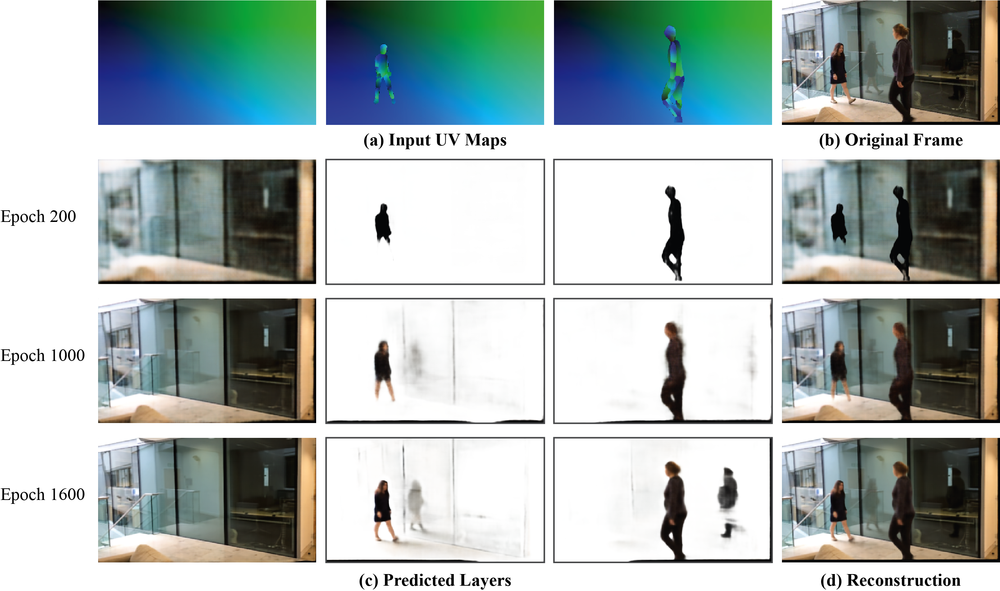
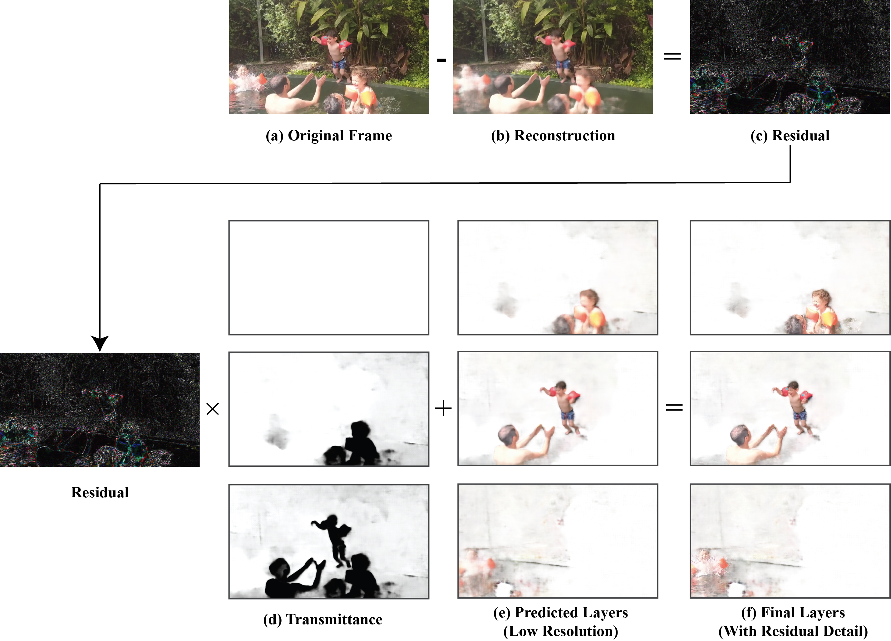

We recommend watching all videos in full screen.
The following videos show, for all the results in the paper: (a) the input video, (b) tracked keypoints, (c) trimaps, and (d) the full layer decomposition.
"Ballroom" |
"Reflections" |
"Splash" |
| For this sequence alone, we edited the trimap for Layer 1 for a single frame to include the water splash region, and then duplicated it for a segment of the video. This editing took under 1 minute. |
"Trampoline" |
"Kids Running" |
"Cartwheel" |
"BMX" |
We compare our method with Double-DIP [2] (the input video and their result are taken from their webpage) and with state-of-the-art deep-learning image matting method [4]. Our method is able to output a cleaner segment around the person than both Double-DIP and image matting. We also manage to fully segment the blurred bike, despite starting with a rough trimap that only represents the person.
We show DensePose [3] UVs next to the results of our keypoint-to-UV network. We do not use DensePose outputs because they sometimes produce errors which are difficult to correct, such as missing body parts, and also do not provide predictions for occluded regions. Instead we use AlphaPose to predict keypoints, which are complete and often more robust, and can be easily manually corrected if they fail. Using this method we can guarantee complete UV maps. Notice that our predicted UVs do not perfectly match the silhouettes of the people. This is acceptable for our use case because our method can refine the initial bounds set by the UV silhouettes; what is important is that the UV exists in roughly the correct region, otherwise those pixels may be reconstructed in an incorrect layer.
AlphaPose [1] keypoints (center) are generally robust but struggle in challenging cases of occlusions. In such cases, we can manually correct the keypoint errors, as well as errors in the tracking (right). In this paper, we manually fixed these errors using a rotoscoping tool for between zero and 10% of input frames (which took 25 minutes for the Ballroom example below).
Colors in the video represent tracked IDs.
In the following figure, we visualize different epochs during training to see how correlations are gradually learned. Early in training at epoch 200, the model has only captured the rough outlines of the people. By epoch 1000, it has refined the outlines and learned some color information, as well as a faint reflection. By 1600 epochs, the model is able to accurately reconstruct the people, their reflections, and their shadows. Portions of the background are also eventually captured in the people layers due to imperfect camera stabilization.
|  |
| Visualization of epochs during training. The model gradually learns to reconstruct the original video frame, starting with the background and people, and eventually learning correlations such as refections and shadows. |
The following figure shows our method for transferring missing high-frequency details back to our predicted layers. CNNs
often struggle to produce sharp details without expensive perceptual and/or adversarial losses. We avoid this expense and simply compute a residual image, which is the difference between the original frame and our reconstruction. Using the computed transmittance maps (defined in the main paper), we can add the residual details back to the appropriate layers. The transmittance maps are computed from the predicted
alpha mattes and indicate the unoccluded regions of each layer.
|  |
| Transfer of residual detail to produce high-resolution layers. CNN outputs (b) often lack high-resolution details. We add these missing residual details ((c), colors enhanced for visualization) back to our CNN output layers (e) by scaling the residual by each layer's computed transmittance (d). The transmittance ensures that the residual detail is not added to any disoccluded region. White pixels in the transmittance represent a value of 1 (unoccluded), and black pixels, 0 (occluded). Our final layer outputs (f) contain the missing high-frequency details, notably in the face region. Best viewed zoomed-in. |
[1] Hao-Shu Fang, Shuqin Xie, Yu-Wing Tai, and Cewu Lu. RMPE: Regional multi-person pose estimation. In ICCV, 2017.
[2] Yossi Gandelsman, Assaf Shocher, and Michal Irani. "Double-DIP": Unsupervised image decomposition
via coupled deep-image-priors. In CVPR, 2019.
[3] Riza Alp Guler, Natalia Neverova, and Iasonas Kokkinos. Densepose: Dense human pose estimation in
the wild. In Proceedings of the IEEE Conference on Computer Vision and Pattern Recognition, pages
7297-7306, 2018.
[4] Qiqi Hou and Feng Liu. Context-aware image matting for simultaneous foreground and alpha estimation.
In ICCV, 2019.